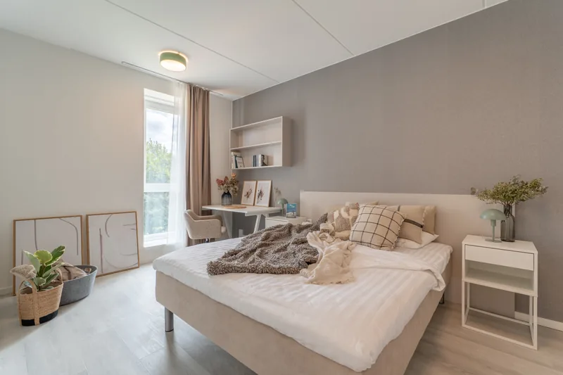

Lühivastus
Ostja ei võrdle sinu fotosid üksikult – ta näeb neid ridamisi, sinu kuulutuste nimekirjas või sinu lehel. Kui kõik objektid on ühes stiilis, loeb aju seda pädevusena. Kui iga objekt on eri nägu, loeb ta seda juhuslikkusena, isegi kui üksikud fotod on head.
Kinnisvarafotograafiast rääkides räägitakse peaaegu alati ühest fotost. Aga keegi ei osta ühe foto pealt ja keegi ei vali maaklerit ühe foto pealt. Vaadatakse hulka – ja hulk käitub teisiti kui selle osad.
See ei ole stiil selle kunstilises tähenduses. Kinnisvaras tähendab ühtsus väga konkreetseid ja mõõdetavaid asju:
Ükski neist ei ole eraldi märgatav. Kõik koos on kohe märgatavad.

Ostja ei mõtle kordagi „milline järjekindel valge tasakaal“. Ta mõtleb „see maakler tundub asjalik“. Vahepealne samm on alateadlik ja lihtne: järjekindlus on ainus asi, mille põhjal võõra pädevust kiiresti hinnata saab.
Sama loogika kehtib mujal. Restoran, kus kaks lauda on kaetud erinevalt. Autoesindus, kus pooled autod on pesemata. Ükski neist ei ole sisuline viga – aga kõik nad ütlevad midagi selle kohta, kui hoolikas on ülejäänud töö.
Tee see katse. Ava oma viimase viie objekti kuulutused kõrvuti eraldi kaartidena ja vaata neid koos, mitte ükshaaval. Kui hüppab värvitoon, heledus või kaadrikõrgus, siis just seda näeb ka müüja, kes sind kaalub.
Vähem, kui tundub – sest ühtsus ei ole eraldi teenus, vaid järjepidevuse kõrvalsaadus. Kui tellid pildistamise ühest kohast ja stiil on kokku lepitud, tuleb ühtsus ise järele.
Meie igakuine pakett ongi ehitatud just selle ümber: prioriteetne broneering, fikseeritud hind ja kindel kokkulepitud töötlusstiil, ilma iga kord uuesti läbi rääkimata.
Ühtlane visuaalne kvaliteet kogu portfoolios. Vaata tehtud töid – kõik objektid, üks stiil – või küsi büroopakkumine.
Kinnisvarabüroodele